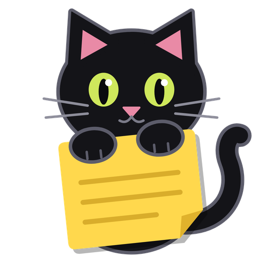
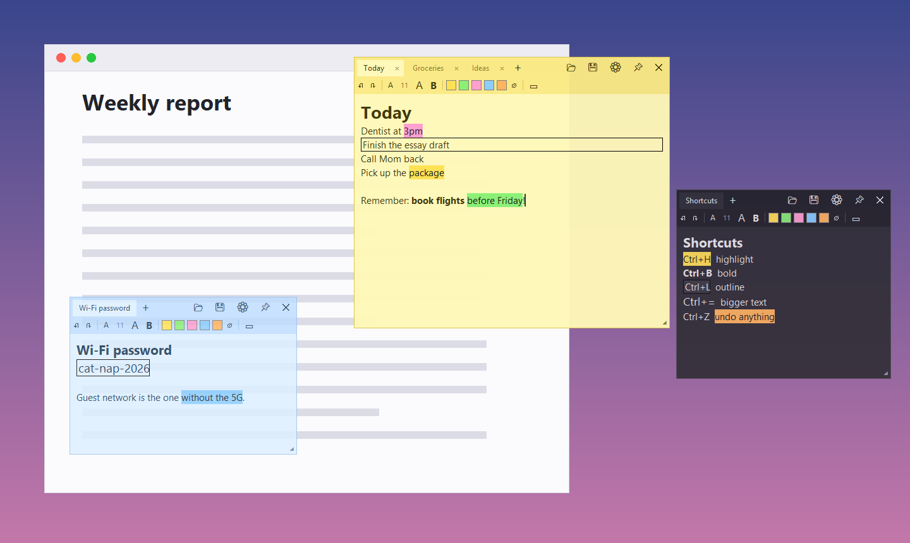
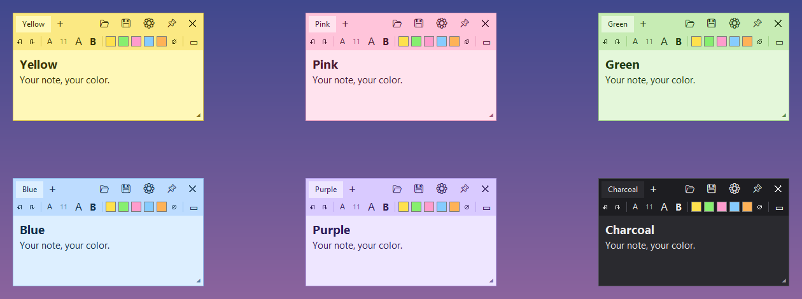

Sticky notes that
stay on top.
OnSticky is a free sticky-note app for Windows. Your notes float above every other window, see-through as much or as little as you like, so the thing you need to remember is always right there.
Download for Windows

What it does
Always on top
Notes stay above your browser, games and documents without stealing your typing. Pin or unpin each note with 📌.
See-through
Set each note anywhere from 20% to 100% opacity with a slider, or hold Ctrl and scroll the mouse wheel over it.
Highlight, bold and size
Five highlighter colors, bold, and bigger or smaller text, for one word or the whole note.
Outline what matters
Draw a box around a word, a phrase or whole lines to make them stand out.
Undo anything
Ctrl+Z undoes typing and formatting: a wrong highlight or outline is one keypress away from gone.
Tabs
Keep several pages in one note. Drag a tab off to make it its own note, or onto another note to combine them.
Save notes as files
Save to .sticky files that keep your formatting and color, and double-click one to open it again. Plain .txt works too.
Never lose a note
Close OnSticky and everything comes back next time, saved or not. A note is only thrown away if you choose Don't save.
Six colors
Yellow, pink, green, blue, purple or charcoal for late nights. OnSticky remembers your favourite and uses it for new notes.

Handy shortcuts
| Ctrl+H | Highlight the selection |
| Ctrl+B | Bold |
| Ctrl+L | Outline the selection (or the whole line) |
| Ctrl+= / Ctrl+− | Bigger / smaller text |
| Ctrl+Z / Ctrl+Y | Undo / redo, including formatting |
| Ctrl+T / Ctrl+W | New tab / close tab |
| Ctrl+S / Ctrl+O | Save / open a note |
| Ctrl+mouse wheel | Make the note more or less see-through |
Installing
- Download
OnSticky-Setup.exeand double-click it. - Windows may show “Windows protected your PC” because the app is new and not yet signed. Click More info → Run anyway.
- Click through the installer. You can tick Start OnSticky when I sign in so your notes are always waiting for you.
No admin password is needed, and nothing else has to be installed first. Saved notes go in OnSticky Notes in your user folder by default. To remove OnSticky, use Settings → Apps; your notes are kept.